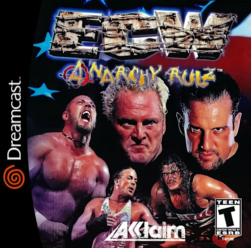
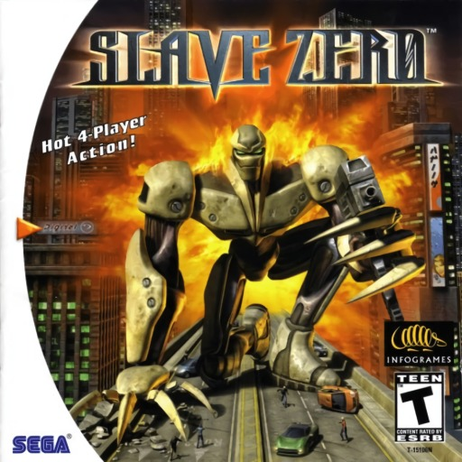
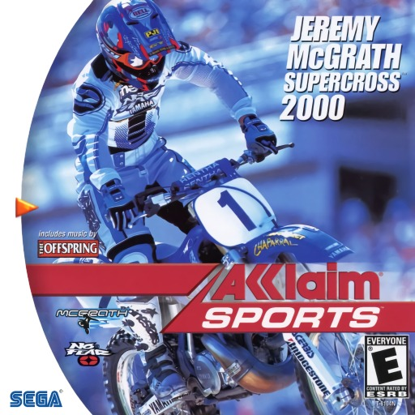

LA ULTIMA CONSOLA DE SEGA... Y SUS ULTIMOS TROPIEZOS
02
EL CRITERIO
DEL MALO AL PEOR
Contamos en cuantas listas de peores aparece cada juego (TheGamer, Dreamcast Junkyard, CBR y los premios de GameSpot 2000). A los de una sola lista les sumamos la nota de la prensa, y a todos, la leyenda del cartucho... perdon, GD-ROM. Dejamos afuera lo que ya esta en nuestro Top Mundial.
▶ PREMIO AL CLON DE SEGUNDA DE LA CASA DE LOS MUERTOSUn juego de pistola de luz que, segun GameSpot, es un clon de segunda del House of the Dead, sin ninguna razon real para seguir apretando el gatillo. Metacritic: 46. Pero en Japon el arcade fue el 13 mas popular del 2000.
▶ PREMIO AL MARIO KART DE SIETE MESESUn juego de karts con los personajes del programa, hecho en 7 meses. Next Generation dijo que era un intento descarado de pegarle el nombre de South Park a un mal juego de carreras. En Nintendo 64 vendio mas de un millon.
▶ PREMIO AL PORT QUE QUEDO PEOR QUE EL ORIGINALUn juego de motos que en la Dreamcast tiene graficos que parecen de PlayStation y, curiosamente, peores notas que en PlayStation: 68 alla, 40 aca. IGN le puso 2,7. La consola mas poderosa, la peor nota.
06
#7
NOTA 38%

Dreamcast
TARROVISIONCH 07
NO SIGNAL
Inserta gameplay aqui
ECW ANARCHY RULZ
DREAMCAST · 2000 · ACCLAIM (DEV. ACCLAIM SALT LAKE CITY) · METACRITIC 38 · DREAMCAST JUNKYARD
▶ PREMIO AL PUBLICO DE CARTONLucha libre extrema con cinco arenas, mesas, infiernos y basureros. Dreamcast Junkyard dice que el publico es de carton y que es igual a los anteriores de Acclaim. Metacritic: 38. Fue el ultimo juego de la ECW antes de su quiebra.
07
#6
EN 2 LISTAS

Dreamcast
TARROVISIONCH 06
NO SIGNAL
Inserta gameplay aqui
SLAVE ZERO
DREAMCAST · 1999 · INFOGRAMES · THEGAMER + CBR
▶ PREMIO AL ROBOT GIGANTE QUE SE ARRASTRAUn robot biomecanico de 18 metros que pelea en una megaciudad. CBR dice que el mapeo de controles es atroz, y IGN, que el frame rate es muy malo, que no hay musica y que el juego se cuelga. Un robot gigante que no cabe en la consola.
▶ PREMIO AL SOLDADO QUE SE HUNDE EN EL PISOUn shooter tactico que en la Dreamcast llego con otro nombre. Segun una lista, tu soldado se hunde en el suelo, los enemigos disparan a traves de las paredes y el escenario solo aparece cuando estas a 15 metros. Metacritic: 50.
▶ PREMIO AL HACHAZO AUTOMATICOEs 1934, escapas de un hospital de genetica con un hacha y recorres Londres y Paris hasta la Torre Eiffel. La mira se fija sola en los enemigos, asi que no puedes escapar, y combatir es machacar el boton. GameRevolution le puso una F.
10
#3
EN 2 LISTAS

Dreamcast
TARROVISIONCH 03
NO SIGNAL
Inserta gameplay aqui
JEREMY MCGRATH SUPERCROSS 2000
DREAMCAST · 2000 · ACCLAIM SPORTS (DEV. ACCLAIM SALT LAKE CITY) · DREAMCAST JUNKYARD + CBR · GAMERANKINGS 42%
▶ PREMIO A LA MOTO SOBRE LAGO CONGELADOUn juego de motocross con 16 pistas y editor, pero con controles que, segun Dreamcast Junkyard, se sienten como andar sobre un lago congelado. CBR dice que el frame rate tartamudea justo cuando hay que cronometrar los saltos.
▶ PREMIO AL ARRESTO POR RELACIONES PUBLICASArrestas bandidos para mejorar las relaciones publicas y peleas con patadas, bates y deslizamientos. GameSpot lo eligio finalista a peor juego del 2000 y lo llamo un desastre entrecortado e incontrolable. Pero IGN le puso 6,8.
▶ PREMIO AL PEOR JUEGO DE 2000, SEGUN GAMESPOTQuince autos clasicos de los anos 30 y nueve circuitos desde Libia hasta Italia, y todos se manejan igual de mal. GameSpot le puso 1,9 y lo eligio el peor videojuego del 2000, en la primera vez que dio ese premio. En Japon, Famitsu le puso 25 de 40.
13
ANALISIS DEL TOP
ACCLAIM: CINCO DE LOS DIEZ
Cinco de los diez los publico Acclaim (South Park Rally, Ducati World, ECW Anarchy Rulz, Jeremy McGrath Supercross 2000 y Spirit of Speed 1937), casi todos salieron en 2000-2001 y la mayoria llego desde el PC o la PlayStation. Mientras la Dreamcast tenia obras maestras, algunos ports apurados se colaron a la fiesta.
14
GAME OVER
INSERTA MONEDA PARA CONTINUAR
Coco cierra tocando el tema de Game Over en bateria. ¿Cual fue el peor juego de Dreamcast que les toco jugar? Cuentanos en los comentarios y cual consola quieren que siga.